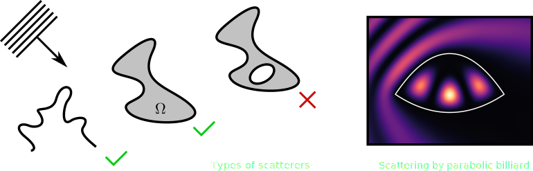

Simple toolbox that implements an integral method for solving for an incident (TM) wave with well behaved scatterers.
Overview
BoundaryWall.jl provides a collection of algorithms and tools for calculating the scattering of arbitrary boundaries, based upon the work of M. G. E. da Luz, A. S. Lupu-Sax, and E. J. Heller on Quantum Scattering, written in pure Julia.
The design of this project was motivated for calculating eigenstates and scattering wavefunctions in billiards (F.M. Zanetti et al., A. Ruiz-Biestro et al.).
This raises an important detail about possible applications. This is a Boundary Integral Method, which limits the applicable domains to 2D curves consisting of: simply connected curves, open curves, or a collection of the previous two. Boundaries with intersections and inner loops will generally not work. While the method does not require a parametrization of the boundary, it does require certain homogeneity in arc length. For more details about the implementation and theoretical foundations, see the Geometry section.

If you have questions or would like to brainstorm ideas, don’t hesitate to contact me. I’d be happy to talk about the project and improve the toolbox in general.